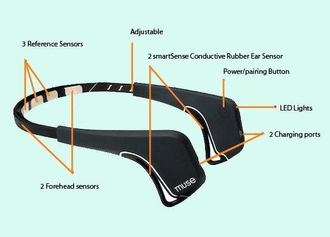

‘I am part of the networks and the networks are part of me...
I link, therefore I am.’
William. J. Mitchell
Neuro Toy
Technological frame
Brain-computer interfaces (BCIs) have been around since the 1970s, when clunky EEG readers were used in laboratory settings for rudimentary neurofeedback and biofeedback programs. Although the readings and data inputs from EEG readers have not changed significantly over the past forty-odd years, the equipment used has changed significantly. Instead of requiring a university laboratory or a quiet room without sounds from the outside causing false positives, and instead of requiring nurses or lab technicians to assist with setup, they have become consumer technology.
Today's brain-reading headbands require no medical training to use, have a tiny learning curve, and are suitable as entertaining objects. The main concept in brain-machine interfaces is that changes in human brain are reflected in changes in some signal, as EEG, which can then be used as a kind of control action to a machine, without the need of using any physical action or command. Our brainwaves (EEG) are small electrical potentials on our scalp as a result of neurons firing inside brain. Headband electrodes record this fluctuating voltage several hundred times per second. These voltages are converted to digital signals and a stream of numbers is sent to a PC or Mac via Bluetooth.
[source]

Idea and References
I want to create a wearable prototype of a neuro toy focusing on augmented sensing and/or augmented human-to-human communication, providing some feedbacks to the user on her emotions. The project should be developed in the perspective of a museum experimental “BYOB” (Bring Your Own Brain or Body) installation in which visitors could testing and learning about their feelings and physiological reactions.
The general framework could be then related to neurofeedback measurements of physiological activity such as brainwaves (using EEG) during a specific activity and creating a set of feedbacks perceivable or only by the user or instead collectively perceivable (as visual or sound feedback). EEG Kiss gives an oustanding example of a potential use of an EEG headset connected to a visual feedback device for an artistic installation. Focusing on neurofeedback means to target the wearable device on and headband and/or dataglove-like device (in case it would appear necessary adding other physiological measurements such as heart function, breathing, muscle activity, and skin temperature via EDG or ECG). I want to involve especially the ears as regions interested by the wearable device since our high sensibility in controlling and managing this area.

A potential start could be looking into the Muse Headband, which helps monitoring physiological activities on the brain and improve concentration, focus, and relaxation. I am not aiming to control anything with brainwaves, as MUSE does, but instead to detect specific user emotions and playfully work with them.
First sketches
A very first idea on how to apply these neurofeedback wearable technologies could be to enhance the user emotions, making them visible to the surrounding environment (e.g. through a light feedback). Users can set the headband in order to make it displaying more lightfully according to the personal user's mood. EEG detection will be able to translate a specific mood into a light sequence, making the user feelings more sharable with people aroung. I can see this enhancer as a good toy for pleasant contexts such as parties, concerts, relaxing times (such as sauna time) or while making exciting activities as snowboarding, etc. This device idea get more sense if imagined be used in public space and with other users wearing the same device.
An interesting element that such headband with such properties would bring in the design phase, is the study of the ergonomy of the tool in relation with the possibility of using part of the user face as buttons to control th headband. Instead of touching a device element to on/off it, it sould be interesting to test the potentiality of the ears surface to communicate with the device itself. Below a very preliminary sketch of a possible use of the ear surface to control headband modes, if more than one.

BYOB/B: Bring Your Own Brain/Body
Usually, we use our ears to listen. In the terminology of human–computer interaction, this means that the ears are used to consume output from the computer.
But the ear’s surface can also be used for input to communicate commands from the user to the computer.
Roman Lissermann, Jochen Huber, Aristotelis Hadjakos, and Max Mühlhäuser from the Technical University of Darmstadt (also in Germany) presented a research prototype called "EarPut" to do just that. Among other benefits, your ear is always in the same place; touching your ear is also slightly less obtrusive than touching your hand.
Possible interactions include:
Touching part of the ear surface, with either single- or multi-touch.
Tugging an earlobe. This interaction is particularly suited for on–off commands, such as muting a music player.
Sliding a finger up or down along the ear arc. This might work well for adjusting volume up or down.
Covering the ear — certainly a natural gesture for "mute."
To measure how precisely people can touch their own ears in a simple single-touch interaction, Lissermann and colleagues instrumented 27 users' ears. When they divided the ear arc into only 2 regions, participants achieved 99% accuracy. When a 3rd region was introduced, however, accuracy dropped substantially.
As this research shows, ear-driven input is best for situations with an extremely limited number of commands like On / Off.
[source]
The image above shows the EarPut Prototype hardware: it’s easy to imagine smaller, lighter, and more elegant hardware.